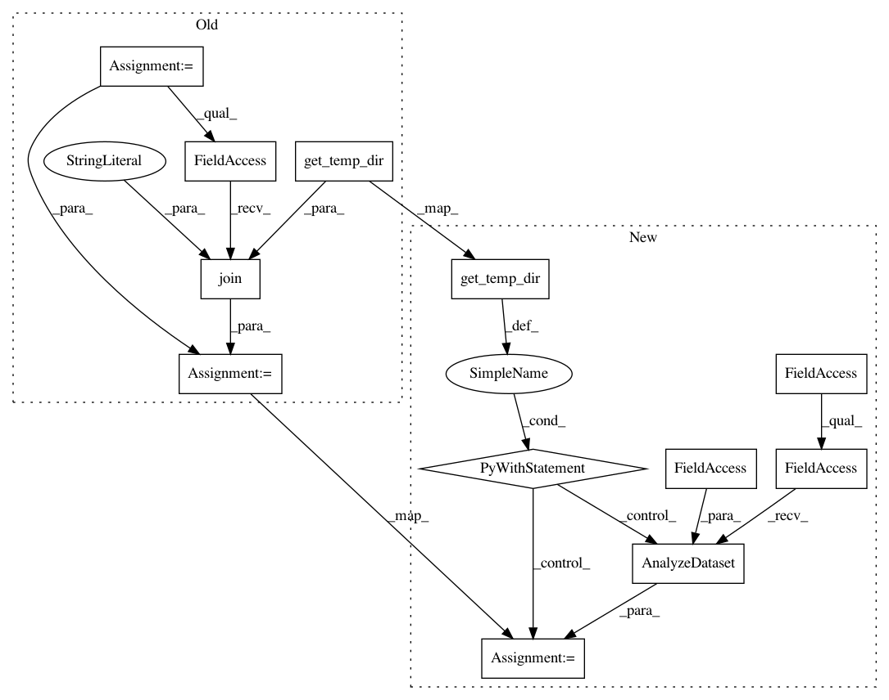

8a70e91ab9878edde4a4abece136f931d032f687,tensorflow_transform/beam/impl_test.py,BeamImplTest,testAnalyzeBeforeTransform,#BeamImplTest#,94
Before Change
(input_data, input_metadata)
| beam_impl.AnalyzeDataset(
preprocessing_fn,
os.path.join(self.get_temp_dir(), "analyze_before_transform_a")))
transformed_eval_dataset = (
((eval_data, input_metadata), transform_fn)
| beam_impl.TransformDataset())
self.assertDatasetsEqual(
transformed_eval_dataset,
(expected_transformed_eval_data, expected_transformed_metadata))
After Change
// Redo test with eval data, using AnalyzeDataset instead of
// AnalyzeAndTransformDataset to genereate transform_fn.
with beam_impl.Context(temp_dir=self.get_temp_dir()):
transform_fn = (
(input_data, input_metadata)
| beam_impl.AnalyzeDataset(preprocessing_fn))
transformed_eval_dataset = (
((eval_data, input_metadata), transform_fn)
| beam_impl.TransformDataset())
self.assertDatasetsEqual(
transformed_eval_dataset,
(expected_transformed_eval_data, expected_transformed_metadata))
In pattern: SUPERPATTERN
Frequency: 3
Non-data size: 12
Instances
Project Name: tensorflow/transform
Commit Name: 8a70e91ab9878edde4a4abece136f931d032f687
Time: 2017-03-22
Author: no-reply@google.com
File Name: tensorflow_transform/beam/impl_test.py
Class Name: BeamImplTest
Method Name: testAnalyzeBeforeTransform
Project Name: tensorflow/transform
Commit Name: 8a70e91ab9878edde4a4abece136f931d032f687
Time: 2017-03-22
Author: no-reply@google.com
File Name: tensorflow_transform/beam/impl_test.py
Class Name: BeamImplTest
Method Name: testTransformWithExcludedOutputs
Project Name: tensorflow/transform
Commit Name: 8a70e91ab9878edde4a4abece136f931d032f687
Time: 2017-03-22
Author: no-reply@google.com
File Name: tensorflow_transform/beam/impl_test.py
Class Name: BeamImplTest
Method Name: testNumericAnalyzersWithSparseInputs